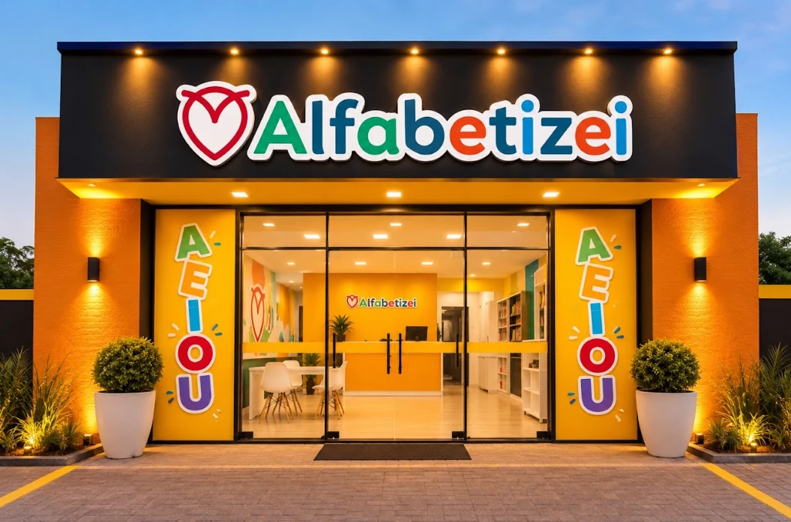
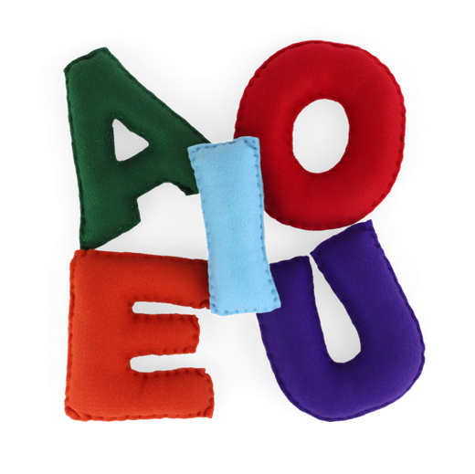
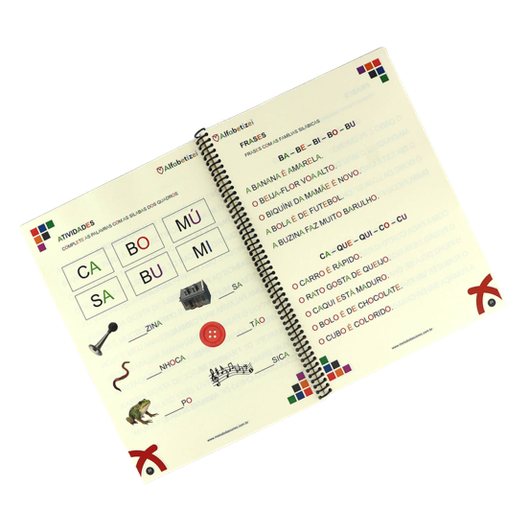
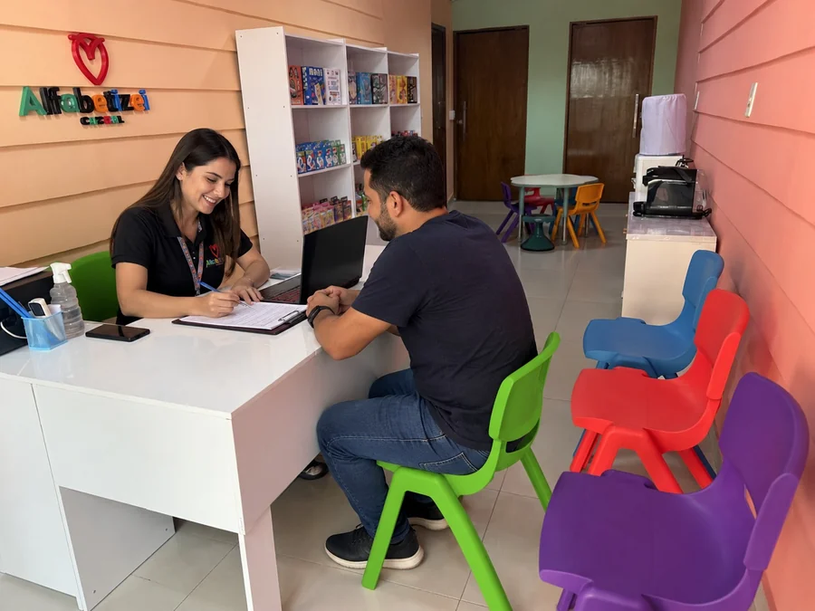
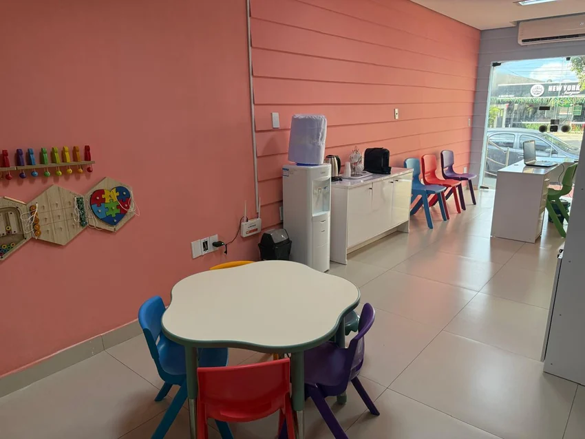
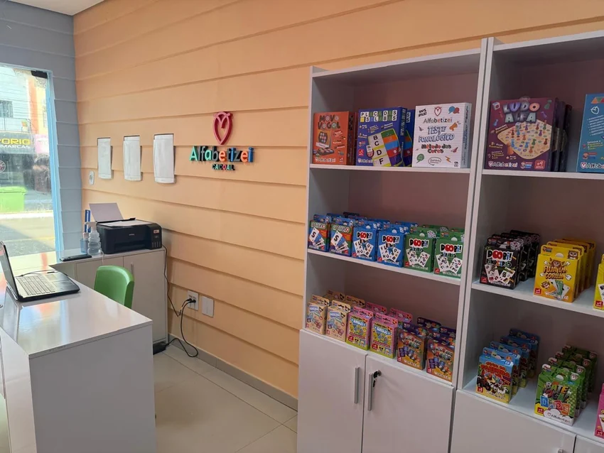
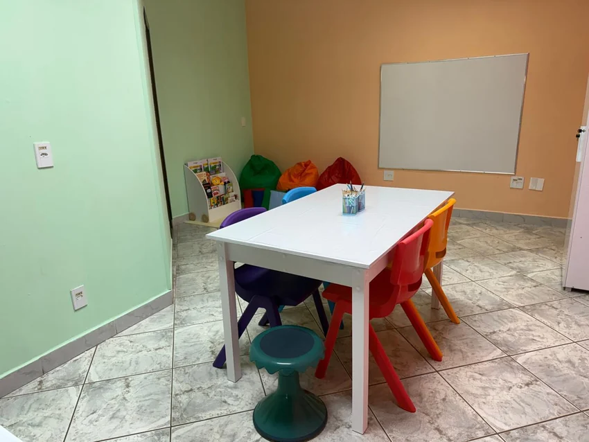
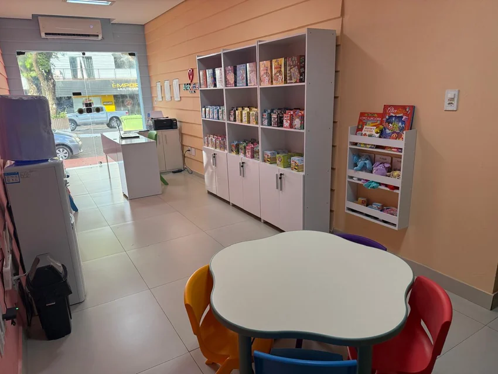

R$ 60–80 mil
Investimento inicial
Faixa de investimento apresentada no alinhamento comercial.
Uma franquia para profissionais que querem diversificar a carreira e construir uma operação própria com marca, metodologia e ativos já estruturados no mercado.

Faixa de investimento apresentada no alinhamento comercial.
Prazo de retorno apresentado pela marca na reunião de alinhamento.
O modelo não incide sobre o faturamento total da unidade.
O modelo pede dedicação real e presença à frente da operação.
Margem de lucro: os indicadores e cenários vigentes são apresentados pelo time de expansão.
A Alfabetizei não limita o perfil do franqueado a uma única profissão. O foco está em pessoas com capacidade de gestão, investimento e disponibilidade para desenvolver o negócio.
Pessoas de diferentes áreas que desejam diversificar a carreira e construir uma operação própria.
Quem busca um negócio com identidade, ativos próprios e presença em um setor de demanda recorrente.
Profissionais do mercado corporativo ou financeiro que enxergam o empreendedorismo como próximo passo.
Profissionais da educação que desejam transformar repertório e experiência em uma operação própria.

O Método das Cores nasce de uma trajetória de 16 anos de atuação em uma Clínica Multidisciplinar.
Foi a partir dessa vivência prática, atendendo crianças com dificuldades e transtornos de aprendizado, como TDAH, TEA e Dislexia, que as fundadoras, uma Psicóloga e uma Psicopedagoga, desenvolveram e aperfeiçoaram uma metodologia própria para a alfabetização.
Para o futuro franqueado isso significa entrar em um negócio que não começa com uma ideia recém-criada: existe um método e resultados validados por trás da marca.

A metodologia das cores é aplicada por meio de um conjunto de materiais didáticos e jogos educativos criados para estimular e desenvolver a alfabetização de todas as crianças.
Por isso, materiais e jogos não são apenas acessórios do negócio, eles fazem parte do sistema de aplicação do Método.

A metodologia e os recursos da Alfabetizei permitem organizar atendimentos com até três crianças por hora, ampliando a capacidade de atendimento da unidade.
Isso cria para o franqueado a possibilidade de desenvolver a operação de forma progressiva:
Você não precisa criar o produto, inventar a metodologia ou desenvolver sozinho a forma de aplicação.
A estrutura já existe para que você possa concentrar seus esforços em gerir, desenvolver e escalar a sua unidade.
Unidades reais ajudam a materializar a marca e mostram como a identidade Alfabetizei ganha forma no dia a dia.




A seção de dúvidas foi concentrada em informações de franquia e decisão comercial.
Não. A Alfabetizei não limita o perfil do franqueado a uma única profissão. O foco está em pessoas com capacidade de gestão, investimento e disponibilidade para desenvolver o negócio.
A faixa apresentada é de R$ 60–80 mil. As condições vigentes são informadas no alinhamento comercial.
O prazo de retorno apresentado pela marca na reunião de alinhamento é de 18 a 24 meses.
A Alfabetizei apresenta um modelo diferenciado: ele não incide sobre o faturamento total da unidade. Os detalhes são apresentados pelo time de expansão.
O modelo pede dedicação real e presença do franqueado à frente da operação.
Os indicadores de margem de lucro e os cenários vigentes são apresentados pelo time de expansão durante o alinhamento comercial.
Preencha os dados abaixo. As respostas ajudam o time de expansão a entender seu perfil, capacidade de investimento e prazo para abertura antes da conversa comercial.